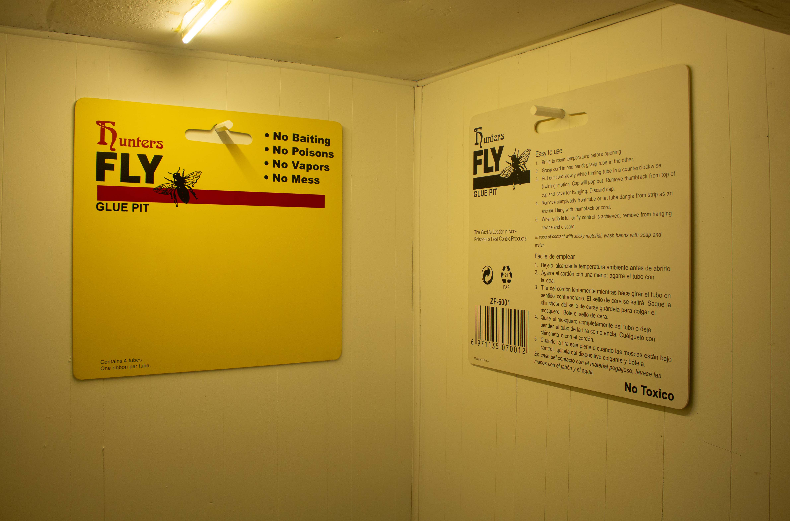
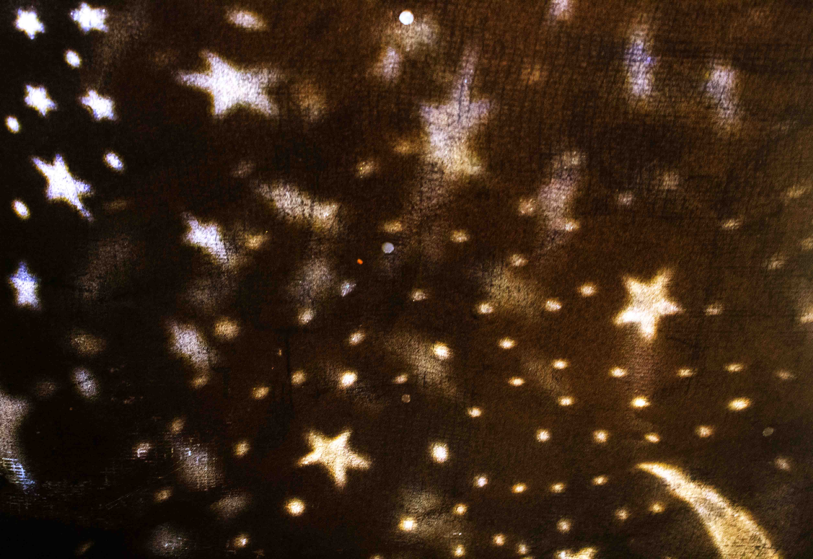

Installation view.
Flytrap Study (Double Reversal), 2024, Acrylic paint on plywood. Each 110 X90 X0.6cm.
Untitled, 2024, DVD cases, Dimensions variable.
Transmission, 2024, 16mm film converted to DVD, portable DVD player, folding stool. 21 seconds (looped).
Starfield, 2024, Starfield night light projectors, Dimensions variable.